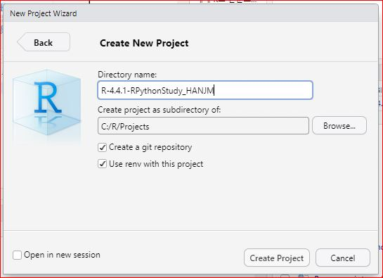
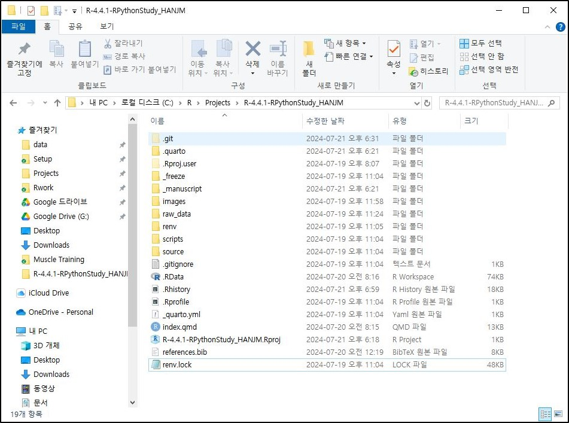
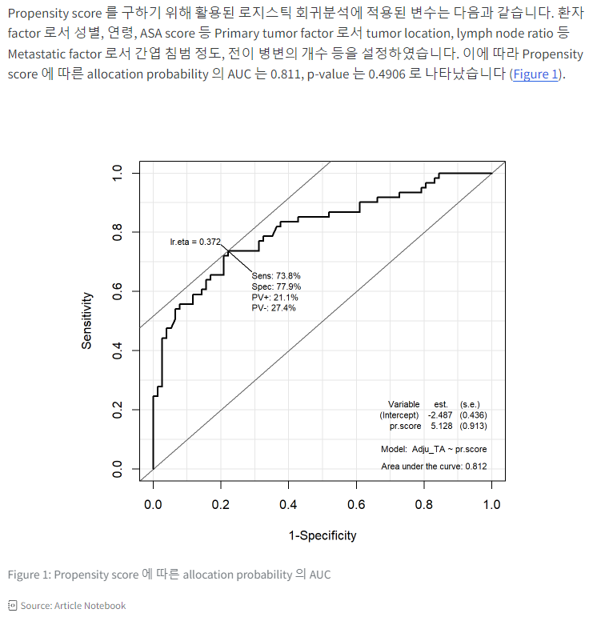
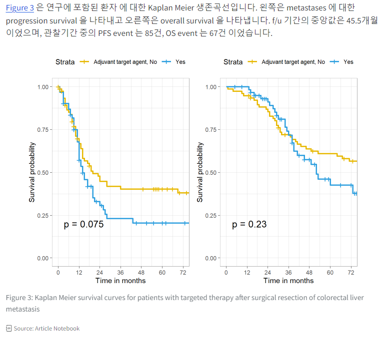
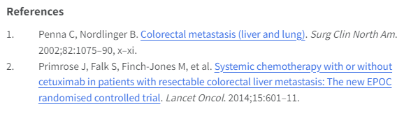

예시
R-4.4.1-RPythonStudy_HANJMRStudio를 실행하고 파일메뉴에서 New Project… > New Directory > New Project를 단계적으로 선택하고
C:\R\Projects (=Default working directory) 하위에 Directory name 입력란에는 아래의 예시와 같이 R의 버전과 프로젝트를 상징하는 이름을 조합하여 입력할 것을 추천합니다.
예시
R-4.4.1-RPythonStudy_HANJMgit repository(=저장소) 만들기와 renv 사용하기 check box는 예제 R프로젝트를 다운로드 하기 위해서는 선택해야 합니다.

이제 탐색기로 프로젝트 폴더(C:.1-RPythonStudy_HANJM)를 살펴보면 .git 폴더, .Rproj.user 폴더, renv 폴더, .gitignore 파일, .Rprofile 파일, R-4.4.1-RPythonStudy-HANJM.Rproj 파일, renv.lock 파일들이 생성되었음을 확인하실 수 있습니다.

git를 사용하기 때문에 설정이 보관되는 .git 폴더와 버전관리 예외(규칙)이 기록되어 있는 .gitignore 파일이 생성되어 있습니다. renv를 사용하기 때문에 프로젝트에 패키지가 설치되는 renv 폴더가 생성되었고 설치되는 패키지의 대한 기록이 되는 renv.lock 파일 생성되어 있습니다. RStudio에서 프로젝트로 이 폴더를 사용하기 때문에 .Rproj.user 폴더, .Rprofile 파일, R-4.4.1-RPythonStudy_HANJM.Rproj 파일이 생성되어 있습니다.
이 과정을 위해서는 당연히 git가 미리 설치되어 있어야 합니다. 설치 되어 있는지 확인은 Console 창의 Terminal tab에서 “git –version”을 실행하여 버전이 출력되면 적절히 설치가 되어 있는 것입니다 (Window 기준).
Terminal
git --version아래는 github 원격저장소에 있는 생존분석데이터를 이용한 샘플용 R프로젝트를 나의 R 프로젝트 폴더에 다운로드 받는 방법입니다.
먼저 현재의git 프로젝트에 github 원격저장소의 URL을 등록해야 합니다. Git 명령을 입력하기 위해 아래의 그림의 console pane의 Terminal 탭으로 이동하여 git remote add 명령을 실행합니다.

Terminal
git remote add origin https://github.com/RPythonStudy/HANJM.git그리고 원격저장소가 적절히 등록되었는지는 아래의 명령으로 확인하시면 됩니다.
Terminal
git remote -v만약 이미 등록되어 있는데 다시 등록한다면 “error: remote origin already exists.”라는 메세지가 나올 것입니다.
😅 그리고 다운로드 준비를 해야 하는데 git pull 명령으로 원격저장소의 모든 파일을 다운로드 할 예정인데 로컬 폴더에 중복되는 파일이 하나라도 있으면 오류가 발생하므로, 중복이 되는 파일인 .gitignore, .Rprofile과 renv.lock 을 로컬 프로젝트폴더에서 삭제해 줍니다.
이후 아래의 git 명령으로 원격저장소의 모든 파일을 다운로드 받아 주면 됩니다.
Terminal
git pull origin master(중복이 있더라도 원격저장소으 파일로 강제로 덮어쓰는 명령이 있지만 제가 시도할 때는 오류 메세지가 같이 나오기 때문에 일단 여기에는 소개하지 않습니다.)
필자주: 이전에 다운로드 받은 적이 있고, 원격저장소의 파일이 갱신되어 있어 로컬저장소를 갱신하고자할 때로 위의 pull 명령을 사용하시면 됩니다. 이전 다운로드 이후에 로컬에서 수정한 적이 없으면 잘 다운로드 됩니다. 이후에는 renv::store() 명령으로 원격저장소의 renv.lock파일에 기록된 패키지들이 로컬과 차이가 있는지 점검하는 것이 좋습니다. 만약 로컬에서 파일을 수정하였기 때문에 로컬과 원격의 충돌이 발생한다면 아래의 명령을 시도해 봅니다. 이 경우 로컬의 파일들이 지워지고 자동으로 백업이 되지는 않기 때문에 필요시에는 백업을 미리 해 두셔야 합니다. 이렇게 해도 문제가 있다면 프로젝트 폴더를 삭제하고 처음부터 과정을 다시 진행하시길 바랍니다.
Terminal
git fetch origin
git reset --hard origin/master원격저장소에는 예제 R프로젝트 파일은 있지만 이를 위해 필요한 R 패키지까지 같이 있지는 않습니다. 하지만 renv.lock 파일에는 설치된 패키지 버전과 목록이 기록되어 있으므로 이를 이용해서 설치하시면 됩니다.
Console pane의 Consle 탭으로 이동해서 renv::restore() 명령을 실행하시면 됩니다.
Console
renv::restore ()만약 이전에 renv::restore()를 수행하여 패키지가 이미 update된 상태에서 다시 위 명령을 수행한다면 “- The library is already synchronized with the lockfile.”이라는 메세지가 출력할 것이며 이미 update된 것 상태이므로 다음 단계를 진행하시면 됩니다.
예제 R로 논문쓰기 프로젝트를 실행할 때 raw data로써 “deidentified_han20230213.xlsx”이 필요합니다. 이 파일은 이미 개인정보보호조치(개인정보익명화, 날짜정보를 날짜간의 차이정보로 변환)가 되어 있지만 연구회의 방침상 업로드는 되어 있지는 않습니다. 내부연구자 분들이 실습을 위해 위 파일이 필요한 경우에는 연구회에 연락 바랍니다. 이 파일을 프로젝트 폴더 하부의 raw_data 폴더를 만들고 위 xlsx 파일을 복사해 주시면 됩니다.
예제 R로 논문쓰기 프로젝트가 로컬에서 준비가 완료되었습니다. 원하는 기능들이 R청크에서 어떻게 구현되었는지 확인하시고 코드줄, 블록 또는 청크단위로 실행하시면서 구현결과를 확인하시면 됩니다.
RStudio에서 *.R로 생성되는 R 스크립트 파일 내의 특정부분 스크립트를 실행하면 Console pane에서 결과를 확인할 수 있습니다. 그래픽 출력은 Output pane에 위치한 Plots 창에서 볼 수 있으며, HTML 위젯이나 대화형 문서는 Viewer 창에서 확인 가능합니다. 변수와 데이터셋의 현재 상태는 Environment 창에서 볼 수 있고, 스크립트나 함수가 생성하거나 수정한 파일은 Files 탭을 통해 접근할 수 있습니다.
논문에서 그래프를 사용하고 싶다면 Output pane의 Plots 탭에서 Export 하면되고, 테이블을 사용하고 싶으면 csv 파일로 저장하도록 스크립트 내에서 코딩을 해두면 됩니다. 그래프의 경우도 파일로 저장할 수 있습니다.
R Markdown은 markdown이라는 문서작성 언어로 작성된 문서 내에 R 코드가 포함된 것으로, R 코드 결과물이 문서의 지정된 부위에 생성되는 개념입니다. 이를 논문작성에 적용하면 작성중인 논문 데이터의 오류를 정정하였을 때 R Markdown에서는 이미 작성한 그래프나 테이블을 연결되어 수정되며 이는 큰 장점입니다.
R Markdown이 주로 R 만 지원하고 출력형식이 제한적이지만 최근에 개발된 Quarto는 R 이외에도 Python 등 다양한 프로그램언어를 지원하며, 출력형식도 다양하여 장점이 많으로 연구회에서는 R로 논문쓰기 프로젝트를 Quarto를 사용하여 진행합니다.
Quarto 문서의 기본구조는 R Markdown과 같이 대쉬3개(—)로 둘러싸인 YAML 헤더 , 3개의 백틱(```)과 {r}로 둘러싸인 R코드청크, quarto markdown 문법에 따라 작성되는 본문으로 구성됩니다. 아래의 예제 R프로젝트의 예시입니다.
---
title: Role of Targeted Therapy after Surgical Resection of Colorectal Liver Metastases
author:
- name: Ui Sep Shin
orcid: 0000-0002-1714-7469
corresponding: true
affiliations:
- name: KIRAMS
department: Department of General Surgery
email: uisupshin@kirams.re.kr
bibliography: references.bib
csl: annals-of-surgery.csl
---
```{r}
#| label: Load-raw-data
library(readxl)
raw_data_directory<-"raw_data"
raw_data_filename<-"deidentified_han20230213.xlsx"
project_path <<- getwd()
raw_data_path <<- file.path(project_path, raw_data_directory)
raw_data_path_filename <- file.path(raw_data_path, raw_data_filename)
raw_data <- read_excel(raw_data_path_filename)
```
## Introduction
Resectability가 있는 대장암의 간 전이에 대한 가장 효과적인 치료법은 전이부위를 포함하는 절제 수술과 perioperative chemotherapy으로 제시되고 있습니다. 하지만, 수술 후 재발률이 18개월 이내 75%까지 보고될 만큼 매우 높습니다 [@RN671].
이에 항암화학요법에 표적 치료제를 추가하는 것에 대해 몇 몇 study가 보고되었으나 대규모의 높은 등급의 study는 아직 부족한 상태입니다. 이러한 study 에 따르면, 수술 후 표적치료제의 추가는 생존 이득이 없거나 오히려 유해한 결과로 나타났다고 보고되었습니다.
그러나 아직까지 국내 보험체계는 전이 부위를 포함하는 절제술 후 항암요법에 표적치료제를 추가하는 것에 제한이 없는 상황입니다.
따라서 대장암의 간 전이에서 근치적 절제술 후 항암화학요법을 진행한 환자에 대한 분석을 진행하여 표적치료제의 영향력을 평가하고자 하였습니다YAML 헤더는 quarto 문법 중 Front Matter (https://quarto.org/docs/authoring/front-matter.html)를 참고하면 YAML 문법에 맞게 작성할 수 있습니다.
R코드청크(=code cell) 는 그 자체는 일반적인 R 스크립트와 같이 작성하면 되지만 청크의 실행과 출력결과를 조절하기 위한 옵션들(https://quarto.org/docs/reference/cells/cells-knitr.html)이 있습니다. R코드청크 내부에 #| 이후에 옵션을 설정하게 되며 아래에 예제 R프로젝트에 사용된 예시들이 있습니다.
```{{r}}
#| label: Load-raw-data #제목을 설정, "_"는 오류가 가능하다 하니 "-"로 단어 연결 추천
#| label: fig-myplot #그래프의 라벨을 설정 "fig-" 시작해야 만 함
#| label: tbl-mytable #테이블의 라벨을 설정 "tbl-" 시작해야 만 함
#| output: false # 텍스트형태의 결과물이 문서에 포함되지 않음
#| fig.show: 'hide'# 그래프형태의 결과물이 문서에 포함되지 않음
#| fig.height: 6
#| fig.width: 6
#| eval: false # 코드가 실행되지 않음
```Quarto markdown 문법은 R Markdown과 비슷하지만 더 많은 기능을 제공합니다. Quarto markdown 문법은 https://quarto.org/docs/authoring/markdown-basics.html를 참고하면 됩니다. Quarto는 Visual Editor 모드를 지원하여, WYSIWYG(What You See Is What You Get) 방식으로 문서를 작성할 수 있습니다. Visual Mode를 사용하면, 코드 블록 삽입, 이미지 추가, 테이블 생성 등을 GUI를 통해 쉽게 할 수 있습니다.
Quarto로 새로운 프로젝트를 만들 때 R로 논문쓰기에 적합한 manuscripit 프로젝트가 있으며 예제 R 프로젝트도 manuscript 프로젝트를 이용해 만들어졌습니다. 일반적인 폴더와 파일구성은 다음과 같은 구조를 가질 수 있습니다.
Project/
├─ _freeze/
├─ _manuscript/
├─ _quarto.yml
├─ .gitignore
├─ .Rhistory
├─ .Rprofile
├─ index.qmd
├─ R-4.4.1-RPythonStudy_HANJM.Rproj
├─ references.bib
├─ renv/
└─ renv.lock
Quarto는 청크 단위의 실행 결과를 캐싱할 수 있습니다. YAML 헤더의 execute.freeze 옵션을 auto 또는 true로 설정하면 캐싱을 위해 _freeze 폴더가 생성됩니다.
Quarto manuscript 프로젝트에서는 기본적으로 렌더링 결과를 _manuscript 폴더에 만듭니다. 출력 결과를 다른 폴더로 변경하고자 할 때에는 YAML 헤더에서 output-dir: 원하는 폴더명으로 수정하시면 됩니다.
_quarto.yml 파일은 Quarto 프로젝트의 설정을 관리하는 구성 파일입니다. 이 파일을 통해 프로젝트의 전반적인 설정, 문서 렌더링 옵션, 그리고 특정 문서의 형식과 출력을 제어할 수 있습니다.
아래는 예제 R 프로젝트에 사용된 _quarto.yml 의 부분입니다.
example of _quarto.yml
project:
type: manuscript
manuscript:
article: index.qmd
format:
html:
comments:
hypothesis: true
# docx: default
# jats: default
execute:
freeze: true
editor: visualQuarto 프로젝트 설정은 문서 또는 기사 작성에 주로 사용되며, ‘manuscript’으로 유형이 지정되어 있습니다. 이 설정은 프로젝트의 메인 문서 파일로 ’index.qmd’를 지정하고 있습니다. ’index.qmd’ 파일은 Quarto Markdown 형식으로, 프로젝트의 핵심 내용을 포함하고 있습니다.
문서의 출력 형식으로 HTML이 지정되어 있어, 생성된 문서가 웹 페이지 형태로 렌더링되어 표시될 것입니다. 이 HTML 출력 설정에는 댓글 기능이 포함되어 있으며, Hypothesis라는 오픈 소스 주석 도구가 활성화되어 있습니다. Hypothesis 도구를 통해 사용자는 웹 페이지에 직접 주석을 추가할 수 있습니다, 이는 인터랙티브한 문서 환경을 조성합니다.
‘freeze: false’ 설정은 문서 빌드 시 실행 코드의 결과를 캐싱하지 않겠다는 것을 의미합니다. 즉, 이 설정은 문서가 빌드될 때마다 관련 코드가 매번 실행되어 결과가 갱신되도록 합니다.
추가적으로, ‘docx’와 ’jats’ 형식은 현재 비활성화된 상태로 주석 처리되어 있습니다. 이는 렌더링 시간을 단축하기 위한 조치로, 비활성화된 상태에서는 이 포맷들이 문서 출력 형식으로 사용되지 않습니다.
마지막으로, ‘editor: visual’ 설정은 Quarto 문서 작성 시 사용되는 에디터 유형을 명시합니다. Visual editor는 사용자가 마크다운 문법을 몰라도 문서를 작성할 수 있도록 지원하는 사용자 친화적인 인터페이스를 제공합니다. 이는 문서 작성 과정을 보다 직관적이고 접근하기 쉽게 만듭니다.
이러한 설정들은 효과적인 문서 작성과 관리를 가능하게 하며, 사용자에게 다양한 도구와 옵션을 제공하여 유연한 작업 환경을 조성합니다.
.gitignore 파일은 Git 버전 관리 시스템에서 특정 파일이나 디렉토리를 추적하지 않도록 설정하는 데 사용됩니다. 이 파일은 프로젝트 디렉토리 내에 위치하며, Git이 파일을 무시하도록 지시하는 패턴 목록을 포함하고 있습니다.
.Rhistory 파일은 R 프로그래밍 환경에서 사용자가 실행한 모든 명령어의 이력을 저장하는 파일입니다. 이 파일은 R 콘솔에서 직접 입력하거나 스크립트를 실행하는 동안의 사용자의 명령어들을 자동으로 기록합니다. 이 기능은 사용자가 이전 세션에서 수행한 작업을 추적하고, 필요한 경우 명령어를 재사용하거나 참조할 수 있게 해 줍니다.
.Rprofile 파일은 R 세션의 시작 시 자동으로 실행되는 스크립트를 포함하는 설정 파일입니다. 이 파일은 사용자 또는 특정 프로젝트에 대한 환경 설정을 사용자 정의하고, R 세션을 시작할 때마다 일관된 작업 환경을 구성하는 데 사용됩니다. .Rprofile은 R의 시작 시 자동으로 로드되므로, R을 사용하는 데 필요한 라이브러리 로딩, 옵션 설정, 환경 설정 등을 자동화할 수 있습니다. 예제 R프로젝트에서는 renv 환경이 활성화되도록 설정되어 있습니다.
index.qmd 파일은 Quarto 문서 프로젝트에서 중요한 역할을 하는 메인 문서 파일입니다. .qmd 확장자는 Quarto Markdown을 의미하며, 이 파일 형식은 Markdown의 확장 버전으로, Quarto에서 제공하는 다양한 기능을 지원합니다.
.Rproj 파일은 RStudio의 프로젝트 파일로, 특정 R 프로젝트와 관련된 설정과 환경을 저장합니다. 이 파일은 RStudio 환경에서 프로젝트를 더 효율적으로 관리할 수 있게 해 주며, 프로젝트별로 별도의 작업 공간과 설정을 유지할 수 있도록 도와줍니다.
references.bib 파일은 레퍼런스 관리와 문헌 인용을 위한 BibTeX 파일입니다. 이 파일은 주로 LaTeX 문서나 다양한 텍스트 편집 소프트웨어와 통합하여 사용되며, 학술적 작업, 연구 보고서, 논문 등에서 출처를 인용하고 관리하는 데 필요한 정보를 포함합니다.
renv 폴더는 R 프로젝트에서 프로젝트별 종속성 관리를 위해 사용되는 renv 패키지에 의해 생성되는 디렉토리입니다. 이 폴더는 프로젝트의 라이브러리를 격리시켜 다른 프로젝트나 시스템의 R 패키지 설치와 독립적으로 유지할 수 있도록 도와줍니다. renv는 R의 프로젝트에 대한 복원 가능하고 재현 가능한 환경을 제공하는 데 중점을 두고 있습니다.
renv.lock 파일은 R 프로젝트에서 renv 패키지를 사용할 때 생성되는 중요한 파일로, 프로젝트의 종속성(의존하는 R 패키지들)을 정확하고 재현 가능하게 기록합니다. 이 파일은 프로젝트에 필요한 모든 R 패키지의 버전과 소스 정보를 포함하여 프로젝트 환경을 재현할 수 있도록 돕습니다.
Quarto 문서 렌더링은 .qmd 파일(Quarto Markdown 파일)을 다양한 출력 형식으로 변환하는 복잡한 과정을 포함합니다. 이 과정은 데이터 분석, 코드 실행, 결과의 시각화를 포함한 종합적인 문서 생성을 목표로 하며, 주로 Quarto의 명령줄 인터페이스(Command Line Interface, CLI)를 통해 실행됩니다. 예를 들어, quarto render mydocument.qmd 명령은 mydocument.qmd 파일을 지정된 형식으로 변환합니다. 이 CLI 명령은 RStudio의 콘솔 창 아래에 있는 터미널에서 실행할 수 있습니다. 추가적으로, RStudio에서는 ‘Render’ 버튼을 사용하여 문서의 미리보기가 가능합니다. 이 버튼은 RStudio 환경 내에서 Quarto 문서를 쉽게 렌더링하고 결과를 실시간으로 확인할 수 있는 사용자 친화적인 방법을 제공합니다. 이를 통해 사용자는 문서의 최종 형태를 확인하고 필요에 따라 수정할 수 있습니다.
Manuscript에 R chunk 들은 모두 앞부분에 위치시키고 논문의 text에 해당하는 Introduction, Method, Result, Discussion 등은 뒷부분에 배치하는 것이 그림이나 표를 원하는 본문의 위치에 삽입하기에 좋습니다.
Quarto manual 중 해당부분(https://quarto.org/docs/manuscripts/authoring/rstudio.html)을 참고하시길 바라며, 간단히 요약하면 아래와 같습니다.
그림(=그래프)의 생성은 manusctipt 앞부분에 위치한 R chunk의 흐름에 따라 생성되도록 하며, 삽입을 원하는 본문의 위치에 별도의 그래프용 chuck를 만드는 것을 추천합니다.
아래는 예시입니다.
Propensity score 를 구하기 위해 활용된 로지스틱 회귀분석에 적용된 변수는
다음과 같습니다. 환자 factor 로서 성별, 연령, ASA score 등
Primary tumor factor 로서 tumor location, lymph node ratio 등
Metastatic factor 로서 간엽 침범 정도, 전이 병변의 개수 등을 설정하였습니다.
이에 따라 Propensity score 에 따른 allocation probability 의 AUC 는
0.811, p-value 는 0.4906 로 나타났습니다
(@fig-AUC-allocation-probability-PSM).
```{r}
#| label: fig-AUC-allocation-probability-PSM
#| fig.cap: Propensity score 에 따른 allocation probability 의 AUC
#| fig.height: 6
#| fig.width: 6
ROC(form=Adju_TA~pr.score, data=HAN_IPTW, plot = "ROC")}
```렌더링하면 manuscrip에는 다음과 같이 보이게 됩니다. (화면을 캡쳐한 것이며 실제로는 HTML 문서입니다.)

이때 chuck label은 fig-로 시작해야 cross-reference에서 인식됩니다.
또한 chuck option을 통해서 caption, 크기 등을 설정할 수 있습니다.
다음의 예시는 그래프 두 개를 나란히 하는 경우입니다.
@fig-survival 은 연구에 포함된 환자 에 대한 Kaplan Meier 생존곡선입니다. 왼쪽은 metastases 에 대한 progression survival 을 나타내고 오른쪽은 overall survival 을 나타냅니다. f/u 기간의 중앙값은 45.5개월 이었으며, 관찰기간 중의 PFS event 는 85건, OS event 는 67건 이었습니다.
```{r}
#| label: fig-survival
#| fig.cap: Kaplan Meier survival curves for patients with targeted therapy after surgical resection of colorectal liver metastasis
library(gridExtra)
grid.arrange(PFS$plot, OS_TA$plot, ncol=2)
```결과는 아래와 같습니다.

같은 방식으로 표를 삽입할 수 있습니다. 예시는 생략합니다. 다만 chuck label은 tbl-로 시작해야 cross-reference에서 인식됩니다. 그리고 table처럼 보이지만 HTML 테이블형식이 아닌 경우는 인식이 되지 않으므로 주의해야 합니다.
Quarto에서 참고문헌을 작성하고 관리하는 방법은 매우 유연하며, 주로 .bib 파일과 함께 사용됩니다. Quarto는 LaTeX의 biblatex 스타일과 호환되며, 다양한 인용 스타일(Citation Style Language, CSL) 파일을 지원하여 특정 저널 형식에 맞춘 참고문헌을 생성할 수 있습니다.
참고문헌을 관리하기 위해 먼저 .bib 파일을 준비합니다. 이 파일은 BibTeX 형식으로 작성되며, 모든 참고문헌 항목이 이 파일에 저장됩니다.
Quarto 문서의 YAML 헤더에 참고문헌 파일을 지정합니다. 이를 통해 Quarto는 문서에서 인용된 항목을 자동으로 참조하고, 문서 끝에 참고문헌 목록을 생성합니다.
본문에서 참고문헌 항목을 인용할 때는 [@key] 형식을 사용합니다. 여기서 key는 .bib 파일에서 정의된 항목의 고유 키입니다.
문서의 끝에서 # References 섹션을 추가하면 Quarto는 인용된 항목을 자동으로 참고문헌 목록에 포함시킵니다.
특정 저널의 인용 스타일을 사용하려면 CSL 파일을 사용할 수 있습니다. 예를 들어, Nature 스타일을 사용하려면 nature.csl 파일을 다운로드하고, YAML 헤더에 추가합니다.
예시는 annals of surgery의 citation style langue 을 https://www.zotero.org/styles로부터 다운로드 받아서 프로젝트 폴더에 위치시킨 후 설정한 것입니다.
---
title: Role of Targeted Therapy after Surgical Resection of Colorectal Liver Metastases
author:
- name: Ui Sep Shin
orcid: 0000-0002-1714-7469
corresponding: true
roles:
- Formal Analysis
- Supervision
affiliations:
- name: KIRAMS
department: Department of General Surgery
email: uisupshin@kirams.re.kr
bibliography: references.bib
csl: annals-of-surgery.csl
number-sections: true
---렌더링 후 결과는 아래와 같습니다.
